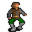

Barthold¶Where to find Barthold: Brightport: Brightport benbyr
{ .sprite }
| Type | NPC (talk only; never fought) |
| Role | Starts Priceful vengeance |
| Found in | Brightport |
| Introduced | v0.8.16.1 |
Quests¶
- Priceful vengeance: stages 10, 20, 30, 90, 100, 130, 136
- Brightport story flags (hidden flag): stages 129, 131, 139
Dialogue simulator¶
Set your quest stages and items, then talk to Barthold. Same rules as the game: same checks, same options, same effects.
Rules verified against v0.8.18 game code (ConversationController.java) and dialogue data.
Dialogue (54 lines)
Exactly as in the game files. Each line appears once; links jump to where a choice leads.
brightport_goon_selector (silent check: the first matching branch below is taken)
- Next (if NOT reached stage 139 of Brightport story flags (hidden flag); NOT reached stage 130 of Priceful vengeance) → brightport_goons_selector
- Next (if NOT reached stage 139 of Brightport story flags (hidden flag); reached stage 130 of Priceful vengeance) → brightport_goonselectorbribe
- Next (if reached stage 139 of Brightport story flags (hidden flag)) → brightport_goons_selectorafter
brightport_goons_selector (silent check: the first matching branch below is taken)
- Next (if reached stage 30 of Priceful vengeance) → brightport_goons25
- Next (if reached stage 20 of Priceful vengeance; NOT reached stage 30 of Priceful vengeance) → brightport_goons21
- Next (if reached stage 129 of Brightport story flags (hidden flag)) → brightport_goons13
- Next (if NOT reached stage 131 of Brightport story flags (hidden flag)) → brightport_goons
- Next (if reached stage 131 of Brightport story flags (hidden flag)) → brightport_goons0
brightport_goonselectorbribe Barthold: “How dare you come back after selling us out! I hope the gold was worth it, coward.”
brightport_goons_selectorafter (silent check: the first matching branch below is taken)
- Next (if reached stage 130 of Priceful vengeance; NOT reached stage 212 of Brightport story flags (hidden flag)) → brightport_goons_after0
- Next (if reached stage 212 of Brightport story flags (hidden flag)) → brightport_goons_after
- Next (if reached stage 90 of Priceful vengeance) → brightport_goons_after1
- Next (if reached stage 100 of Priceful vengeance) → brightport_goons_after2
- Next (if reached stage 136 of Priceful vengeance) → brightport_goons_gaveup
brightport_goons25 Barthold: “Hey kid, any news on your task?”
- “It was a hard fight, but I killed him, They'll probably think a lizardman got him.” (if reached stage 70 of Priceful vengeance) → brightport_goons26
- “I think you guys owe me some gold now.” (if carry 1× Nor city made blade; reached stage 110 of Priceful vengeance; NOT reached stage 135 of Priceful vengeance) → brightport_goons33
- “I tried so hard, and got so far. But in the end, I couldn't find anything.” (if reached stage 135 of Priceful vengeance) → brightport_barthold1
- “Good news. The commander's going to be turning a blind eye to your deals for a while. [Show him the compromising…” (if reached stage 60 of Priceful vengeance) → brightport_goons30
- “No. But I'll see it through.” → conversation ends
brightport_goons21 Barthold: “That's a dangerous thing you're saying, there is no way you can do that. He's not exactly a sheep; Gunfryk is a skilled and cunning warrior.” — effects: sets stage 20 of Priceful vengeance
- Next → brightport_goons22
brightport_goons13 Barthold: “It's nice to see a trustworthy fellow like you around. You need something?”
- “I'm looking for my brother Andor, have you seen him?” (if NOT latest stage of Main quest endings (hidden flag) is 900) → brightport_goons9
- “Benbyr said to come and see you.” → brightport_goons8
brightport_goons Barthold: “Who are you, and what do you need from us?”
- “What do you do around here?” → brightport_goons0
brightport_goons0 Barthold: “Who in Dhayavar are you? You better get out of here before we mess you up!” — effects: sets stage 131 of Brightport story flags (hidden flag)
- Next → brightport_goons_selector2
brightport_goons_after0 Barthold: “How dare you come back after selling us out! Hope the gold was worth it, coward.”
brightport_goons_after Barthold: “Enjoy your reward, traitor. Just remember, that gold won't keep you safe when my friends set their eyes on you!” — effects: starts timer “brightport_arrest”
- Next → brightport_goons_after3
brightport_goons_after1 Barthold: “Good to see you again, friend. Business has been steadier lately.”
- “Good to hear. [Leave]” → conversation ends
brightport_goons_after2 Barthold: “Nice to see you around $playername. Can't say we've been doing better than before.”
- Next → brightport_goons37
brightport_goons_gaveup Barthold: “Hello, friend. It's a shame you helped our friend but couldn't help us.”
- “Well I'm a bit busy searching for my brother.” → conversation ends
brightport_goons26 Barthold: “You killed him!? You're really tough! But him being dead is not ideal.”
- Next → brightport_goons27
brightport_goons33 Barthold: “Ha! What gives, or are you making a joke?”
- “Right, I was joking, sorry.” → conversation ends
- “You don't have the Guild's protection. Either I give this blade I took from your hideout to the guards. Or 2,000 gold.…” (if carry 1× Nor city made blade) → brightport_goons34
brightport_barthold1 Barthold: “Is that so? I'm a little disappointed, thought you're more than just a sheep butcher.” — effects: sets stage 139 of Brightport story flags (hidden flag), sets stage 136 of Priceful vengeance
- Next → brightport_barthold2
brightport_goons30 Barthold: “Give me that! [Barthold skips through some of the pages with a puzzled expression.]”
- Next → brightport_goons31
brightport_goons22 Dynes: “Yeah you'd have to be more discreet, we don't want things to go in a worse direction. If you can pull it off, we'll reward you handsomely. But if you fail you've got nothing to do with us. Understand?”
- Next → brightport_goons23
brightport_goons9 Barthold: “Hmm, doesn't ring a bell.”
- Next → brightport_goons10
brightport_goons8 Barthold: “Benbyr did? Ha! I guess that guy's still up for business! Say, you want to work for us?” — effects: sets stage 10 of Priceful vengeance
- “The kind of work that sent Benbyr to jail? No thanks.” → brightport_goons15
- “I'm not sure, what kind of work exactly?” → brightport_goons16
- “Sure, I have a history of getting things done.” → brightport_goons14
brightport_goons_selector2 (silent check: the first matching branch below is taken)
- Next (if NOT reached stage 30 of Cheap cuts) → brightport_goons1
- Next → brightport_goons2
brightport_goons_after3 Brightport guard: “Oh shut up, we still have an investigation to do here.”
brightport_goons37 Dynes: “The old commander's gone but his mutts have kept their pace, though we've managed to sneak in a few more bribes than usual, he he.”
- Next (if reached stage 152 of Brightport story flags (hidden flag)) → brightport_goons38
brightport_goons27 Dynes: “What's wrong, Barthold? With Gunfryk dead, we've got free rein!”
- Next → brightport_goons28
brightport_goons34 Barthold: “Argh! Dynes, hand him all of our gold!”
- Next → brightport_goons35
brightport_barthold2 Barthold: “You can stick around though, but we don't have any more work for you.”
brightport_goons31 Barthold: “Ha ha ha ha! That's soo funny, who would have guessed that stern Feygard dog would have such hobbies. And in Nor City nonetheless! Northerners and their pride. He surely wants to avoid his men finding out.”
- Next → brightport_goons32
brightport_goons23 Barthold: “Dang it, Dynes, don't egg on the kid. Killing is off the list, understood? Just make him less of a problem for us.” — effects: sets stage 30 of Priceful vengeance
- “Got it, I'll "persuade" him to not be a problem, heh.” → conversation ends
- “How else can I deal with him then?” → brightport_goons24
brightport_goons10 Barthold: “Hey Dynes! have you seen this Andor guy?”
- Next → brightport_goons11
brightport_goons15 Barthold: “Don't lump us in with him. Benbyr's greed got the best of him, he started dealing with rather questionable merchandise. On the other hand, we're not doing anything illegal, just inconvenient for those stuck-up guards.”
- “Inconvenient enough that you can't do your work anymore, sounds like it's illegal to me.” → brightport_goons17
brightport_goons16 Barthold: “We have some deliveries to make, but we're under observation and can't receive more merchandise. If we had a new face to do it for us, we could fare better.”
- Next → brightport_goons18
brightport_goons14 Barthold: “That's the spirit!”
- Next → brightport_goons18
brightport_goons1 Dynes: “Yeah yeah, get out of here!”
brightport_goons2 Dynes: “Wait, wait Barthold! Isn't that the kid?”
- Next → brightport_goons3
brightport_goons38 Barthold: “Feygard sent a new guy if you haven't heard already. Seems like your lie has worked. This guy is more of a warrior than a justiciar, so we're optimistic for now.”
- “If you need someone dead you know who to call. The guard buster $playername.” → conversation ends
brightport_goons28 Barthold: “Free rein? It bought us time. Even if it looked like a lizardman attack, there's no guarantee the replacement Feygard sends won't be someone more extreme.”
- Next → brightport_goons29
brightport_goons35 Dummy NPC: “Dynes begrudgingly takes out a bag of gold and throws it your way.” — effects: gives 1869× Gold coins, sets stage 130 of Priceful vengeance
- Next → brightport_goons36
brightport_goons32 Barthold: “And for a job well done here is your reward; rather generous I say. You'll surely find more work to do in Nor City, just tell them Barthold sent you.” — effects: gives 1200× Gold coins, sets stage 90 of Priceful vengeance, sets stage 139 of Brightport story flags (hidden flag)
- “It was my pleasure, Bye.” → conversation ends
- “If not information about my brother at least some gold.” → conversation ends
brightport_goons24 Barthold: “I don't know, you're our sheep culling expert here. But surely Gunfryk has some secrets he wishes to hide.”
- “Got it, just watch.” → conversation ends
brightport_goons11 Dynes: “Dunno, beats me.”
- Next → brightport_goons12
brightport_goons17 Barthold: “Listen, all our goods are legal. But they want us to pay those things called "taxes" and follow their "trade restrictions" Completely ridiculous! So, you want to work for us or not?”
- “Sure.” → brightport_goons18
brightport_goons18 Barthold: “Hmm, on second thoughts, I'd feel bad about giving you that kind of responsibility. Gunfryk's men are ruthless, if you get caught, you'll have no peace in Brightport.”
- “Who is this Gunfryk guy?” → brightport_goons19
- “I met Gunfryk, he didn't seem like a bad guy.” (if reached stage 156 of Brightport story flags (hidden flag)) → brightport_goons_gunfryk
brightport_goons3 Barthold: “What, who?”
- Next → brightport_goons4
brightport_goons29 Barthold: “Anyway, here's your reward. With skills like yours, you'll surely find more work to do for our friends in Nor City.” — effects: sets stage 100 of Priceful vengeance, gives 1000× Gold coins, sets stage 139 of Brightport story flags (hidden flag)
- “At least I got some gold.” → conversation ends
brightport_goons36 Barthold: “Curses on that Benbyr for sending a rat like you our way! Now get out breadface, our deal is over!”
brightport_goons12 Barthold: “You heard him. Sorry we have no information to help you. Anything else?”
- “Benbyr said to come and see you.” → brightport_goons8
brightport_goons19 Barthold: “He is the guard captain. We used to make a killing with our trade. Well, we're still in business but Gunfryk has significantly cut down on it. His men pay no heed to bribes or the Shadow, except for some enlisted locals.”
- Next → brightport_goons20
brightport_goons_gunfryk Barthold: “On the surface, he's done good for the locals, they like him, like sheep love the shepherd. But for us, who keep the economy of this town alive, the laws he's upholding have done us more harm than good.”
- Next → brightport_goons20
brightport_goons4 Dynes: “It's the kid Benbyr wrote us about, remember?”
- Next → brightport_goons5
brightport_goons20 Dynes: “Yeah, he really complicated things. That guard outside has been there watching us for a year now. We've only managed to stay afloat thanks to a cave I use to hide some merchandise.”
- “Then all that it takes should be getting rid of him?” → brightport_goons21
brightport_goons5 Barthold: “Oh yeah, kinda does look like the one he wrote us about.”
- Next → brightport_goons6
brightport_goons6 Barthold: “I was convinced you were sent to spy on us. So, what brings you around here.” — effects: sets stage 129 of Brightport story flags (hidden flag)
- “I'm looking around the town searching for my brother.” → brightport_goons7
- “Benbyr said to come see you.” → brightport_goons8
brightport_goons7 Barthold: “Really, what does he look like?”
- “He looks a lot like me, his name is Andor.” → brightport_goons9
Version history¶
| Version | Change |
|---|---|
| v0.8.16.1 | Added Dialogue: 54 lines added |
| v0.8.18 | Dialogue: 1 line changed |
Verified against v0.8.18 and every earlier release back to v0.7.0 (game data compared release by release).
Behind the scenes¶
How the game data handles this character. Not needed for playing.
Technical information
| Entry ID | brightportgoons1 |
| Type (wiki) | NPC |
| Spawn group | brightportgoons1 |
| Loot table | – |
| Conversation | brightport_goon_selector |
| Faction | – |
| Movement | – |
| Icon | monsters_ld1:64 |
| Defined in | res/raw/monsterlist_brightport.json |
Raw data:
{
"id": "brightportgoons1",
"name": "Barthold",
"iconID": "monsters_ld1:64",
"phraseID": "brightport_goon_selector"
}
Community notes¶
Written by players, not generated from game data. Observations: what players notice in-game · Lore: the in-world story · Trivia: real-world facts, references, development history · Theory / speculation: unconfirmed ideas; may just be unfinished content
Observations¶
No notes yet. Contributions are welcome: add a note.
Lore¶
No notes yet. Contributions are welcome: add a note.
Trivia¶
No notes yet. Contributions are welcome: add a note.
Theory / speculation¶
No notes yet. Contributions are welcome: add a note.
Data from v0.8.18